Chapter 3: Early Civilizations and Urban Societies¶
Introduction¶
![A picture of a mosaic-covered piece of art is shown. It is divided into three rows, each showing a red, gold, and black scene on a background of dark blue tiles. The top row shows, from the left, a person dressed in a robe with a helmet on his head. He holds an axe in his right hand. He holds the reins to a red and gold chariot in front of him with large decorated wheels. Four horses with red ribbons adorning their neck walk in front of the chariot in a row. A short person in a waistcloth and weapon over his shoulder stands in front of the horses under their heads. Four men in front of him are dressed as the first man in a long robe, hold axes and walking sticks in their hands, and face to the right, each getting taller in height. The image of the man furthest right is very faded. He holds a tall stick in his hand and faces eleven people standing facing him. The images are in various states of fading, but most can be seen wearing robes, some are naked, and none wear shoes. The middle row shows eight soldiers with long robes, capes with black dots all over, and helmets facing to the right and holding long sticks in their hands. Two faded figures stand to the right watching the soldier in front of them hold a long knife over a faded fallen person. The next person holds a long stick and robes in his hands over a person with their arms crossed, lying on the ground. The five people after are naked and walking, facing back and forth with their arms hanging at their sides. Some are very faded. In front of them, three soldiers facing to the right walk with a sword at their sides, the middle one only showing his bottom half. The last row shows a soldier in a short robe and helmet, facing right, standing in the upper portion of the row. In front of him are four red and cold chariots, each led by four horses with ribbons around their necks. The first chariot has one rider and the other three have two riders each, all soldiers with robes and helmets and sporting weapons. Under the horses in the second, third, and fourth chariot, there is a naked body lying on the ground and one shown falling in front of the third chariot. The images become more faded as they go to the right. The outline of the rows is made up of square red, white, and yellow pale colors and blue tiles.](img/osx-worldhist-a03-00-standur.webp)
The land of Sumer, in today’s southern Iraq, was home to some of the largest early cities in human history. In one of these ancient settlements, Ur, a beautiful wooden box was laid in a royal tomb in about 2550 BCE (Figure 3.1). It measures roughly nine by twenty inches (a little bigger than a laptop) and is inlaid with elaborate mosaic figures and borders composed of bits of red limestone, lapis lazuli, and marine shell. This kind of specialized craftsmanship was a hallmark of societies that no longer depended on hunting and gathering for food but rather produced crops capable of sustaining large populations. In turn, they gained enough time and prosperity for some members to focus on artisanal crafts.
The box indicates at least three important things about the civilization that produced it. First, a highly skilled artisan constructed the box and created the mosaics, indicating the presence of specialization of labor. Second, the mosaics show someone who is presumably the king at the center of the top row, directing the soldiers below. These power dynamics suggest new social hierarchies. Finally, the soldiers all appear smaller in the scene than the king, symbolically reflecting their subordinate position and telling us that social stratification had come into existence. All these developments took place gradually over time, bringing slow but enduring change to the lives of the people in Ur and those who lived nearby. Similar changes occurred in the world’s other ancient cities.
![A timeline of events from this chapter is shown. 9500 BCE: Building at Göbekli Tepe begins. 10,000 BCE: Neolithic Revolution begins in the Fertile Crescent. 3150 BCE: Upper and Lower Egypt are unified; a picture of two rounded, triangle, stone slabs is shown with carvings on both. 3000 BCE: Cuneiform developed: a picture of a large brown stone with carvings on it is shown. 2800 BCE: Indus Valley Civilization emerges; a picture of a head of a statue is shown with flattened features. 2600-2500 BCE: Egyptians build Giza pyramids; a picture of large and small stone triangular structures is shown. 2500 BCE: Stonehenge built in England; a picture is shown of large, tall, standing stones in a circular pattern with some having stones laying across the top. 2100 BCE: Epic of Gilgamesh written. 1900 BCE: Indus Valley civilization goes into decline. 1750 BCE: Hammurabi’s Code instituted; a picture of a brown stone with etchings on it is shown.](img/osx-worldhist-a03-00-timeline.webp)
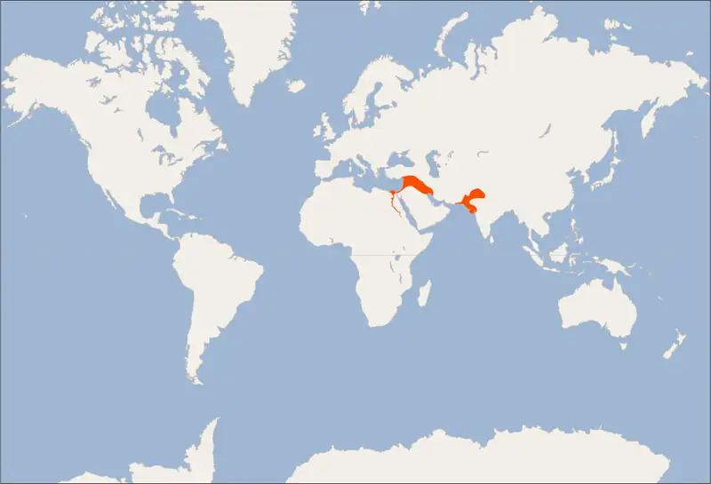
3.1 Early Civilizations¶
Learning Objectives
By the end of this section, you will be able to:
- Discuss the attributes of early civilizations
- Analyze the way human relationships changed with the development of urban areas
Early civilizations, most of which arose along large rivers, were marked by an agriculturally sustained population that remained settled in one area and could number in the tens of thousands. The stability of the population allowed for the development of a discernible culture, which consists of all the different ways a distinct group of people interact with one another and their environment and pass these ways down from generation to generation over time. This is not to say that earlier groups of people lacked social identities. But there were important differences between them and the early civilizations that followed.
The development of early civilizations occurred between 10,000 and 8,000 BCE in just a few specific areas of the world that historians have labeled the “cradles of civilization.” In these locations—today’s Mexico, Peru, China, India/Pakistan, Iraq, and Egypt—the introduction of farming allowed larger populations to settle in one place, and the ability to produce and distribute surpluses of food enabled some people to specialize in such tasks as manufacturing handicrafts, tending to the spiritual world, and governing. The peoples of these cultures experienced radical changes in their lifestyles as well as in the ways their communities interacted with each other and their environments.
Attributes of Early Civilizations¶
Even after the Neolithic Revolution, many people continued to lead a nomadic or seminomadic existence, hunting and gathering or herding domesticated animals. People produced or gathered only enough materials to meet the immediate food, shelter, and clothing needs of their family unit. Even in societies that adopted farming as a way of life, people grew only enough for their own survival. Moreover, the family unit was self-sufficient and relied on its own resources and abilities to meet its needs. No great differences in wealth existed between families, and each person provided necessary support for the group. Group leaders relied primarily on consensus for decision-making. Order and peace were maintained by negotiations between community elders such as warriors and religious leaders. Stability also became dependent on peaceful relationships with neighboring societies, often built on trade.
Early civilizations, by contrast, arose where large numbers of people lived in a relatively small, concentrated area and worked to produce a surplus of food and other materials, which they distributed through a system of exchange. For farming communities, this food surplus meant family size grew to six or seven children and caused the global human population to skyrocket. Population growth rooted in agricultural production led to larger cities, in which the food produced by farmers in outlying rural areas was distributed among the population of the urban center, where food was not produced. This system of specialization was a key feature of early civilizations and what distinguished them from previous societies. Individuals performed specific tasks such as farming, writing, or performing religious rituals. People came to rely on the exchange of goods and services to obtain necessary supplies. For example, artisans specializing in craft production relied on farmers to cultivate the food they needed to thrive. In turn, farmers depended upon artisans to produce tools and clothing for them. A weaver acquired wool from a shepherd and produced cloth that might then be given to a physician in exchange for medicine or a priest as payment for conducting a religious ritual.
The system of exchange, however, created hierarchies within society. Those who could accumulate more goods became wealthy, and they passed that wealth from one generation to the next. This wealth led, in turn, to the accumulation of political and religious power, while those who continued to labor in production remained lower on the social scale. This social stratification, another characteristic of early civilizations, means that families and individuals could vary greatly in their wealth and status. Those who share the same level of wealth and status make up a distinct class or strata, and these strata or classes are ordered from highest to lowest based on their social standing.
The nature of government also changed as populations grew. In smaller groups, decisions about war and migration were made in concert because no individual or family was likely to survive without the others. Also, in small communities, order and peace were often enforced at the family level. If someone acted badly, the customs of the society were brought to bear on them to correct the offending behavior. For example, the San of South Africa held a ritual dance to contact their elders for advice on how to correct a difficult situation. The act of coming together was often enough for the community to heal. In larger civilizations, officials such as priests and kings possessed the authority to command the obedience of subjects, who relied on the powerful to protect them. In return for physical protection and the promise of prosperity, farmers and artisans provided food and goods and, eventually, paid taxes. This exchange served to reinforce both the developing social hierarchy and the specialization of labor.
As civilizations developed around the world in this way, they shared the features noted. Their existence did not mean the end of older ways of living, however. Nomadic and seminomadic peoples not only remained an integral part of the ancient world, they also provided crucial resources and a vehicle for the exchange of knowledge and culture. They were particularly important as a means of connecting one large city to another.
The First Urban Societies¶
Around 10,000 BCE, wheat was first domesticated in what is today northern Iraq, southeastern Turkey, and western Iran, and also in Syria and Israel. This region is commonly called the Fertile Crescent (because of its shape). It includes Mesopotamia (modern Iraq), southern Anatolia (modern Turkey), and the Levant (modern Syria, Lebanon, Israel, and Palestine) and has yielded the earliest evidence of agriculture (Figure 3.4). This same region saw the rise of the first urban areas in the Neolithic Age, often called Neolithic cities. Examples include Jericho (8300–6500 BCE) along the Jordan River in what is today the Palestinian Territories, and Çatalhöyük (7200–6000 BCE) in southeastern Turkey. Archaeologists have established that these early urban areas had populations as high as six thousand.
![A map is shown with land highlighted in pale yellow and water in blue. The year “7500 BC” is written in the bottom right corner. The Black Sea is shown in the northwest, the Mediterranean Sea in the west, the Caspian Sea in the northeast, the Red Sea in the southwest and the Persian Gulf the southeast of the map. The Nile River is labelled in the western part of the map and the Euphrates River is labelled in the middle of the map. A land area in the north of the map is labelled “Caucasus,” an area in the west below the Black Sea is labelled “Anatolia,” and an area below the Mediterranean Sea is labelled “Egypt.” An area in the middle eastern portion of the map is labelled “Mesopotamia.” A dark green upside-down U-shaped line is drawn from just south of the city of Jericho on the coast of the Mediterranean Sea, up through the city of Huleh (labelled with a black square), north through the city of Göbekli Tepe (labelled with a black square), northeast through Cayonu, then south past the city of Zeribar (labelled with a red square) and ending just south of the city of Ganj Dareh (labelled with a red square). The area surrounding this line and a bit to the northwest is highlighted light green with a red edge. Within that highlighted area are these cities, from west to east, marked with a red square: Gatalhoyuk, Jerf el Ahmar, Nevali Cori, Hallan Cemi, Shanidar, Tell Mureybit, Abu Hureyra, Jarmo, Zeribar, Tell Aswad, Ain Ghazal, and Ali Kosh. Within that green area, these cities are labelled with a black square: Asikli Hoyuk and Enyan. In the southwestern corner of the map these cities are labelled with a black square: Elkab, Bir Kiseiba, and Nabta Playa. A small area north of the Mediterranean Sea is highlighted with green stripes and contains the city of Hacilar, labelled with a red square. On the island of Cyprus in the Mediterranean Sea the city of Parekklishia-Shillourokambos is labelled with a red square.](img/osx-worldhist-a03-03-m-fertilec.webp)
Link to Learning
Hunter-gatherer cultures also built large structures, such as the monumental architecture at Göbekli Tepe in southeast Turkey and at Poverty Point in Louisiana in the United States. Listen to this TEDx Talk lecture by the archaeologist who excavated at Göbekli Tepe to find out more about the site. You can learn more about the Poverty Point culture by exploring the Poverty Point website. Look especially at “History and Artifacts.”
Neolithic settlements depended upon the transition to agricultural production to sustain their populations. Such developments were also accompanied by increasing complexity in other areas of life, such as religion. An agricultural surplus enabled religious specialists to devote time to performing bull sacrifices at Çatalhöyük, for example, and freed artisans to hone their skills to create the frescoes that decorated the interior space where these sacrifices occurred. Some form of government must have organized the labor and materials necessary to construct the walls and tower at Jericho, which may have served as an observatory to mark the passage of the solar year. In both Jericho and Çatalhöyük, a shared belief system, or unity behind a leader, must have inspired the inhabitants to labor in the fields and distribute their agricultural surplus. At Jericho, the community may have been united by its veneration of ancestors, whose skulls were decorated and revered as idols. The people of Çatalhöyük may have offered their bull sacrifices to a mother-deity, possibly represented by small figurines of a woman that archaeologists have discovered there.
Beyond the Book: Interpreting Evidence from Neolithic Cities
Prehistoric peoples left no writings behind, and historians and archaeologists can only attempt to understand their beliefs and attitudes by studying the artifacts they produced. This is challenging because ancient societies had very different religious and social systems from our own. But even the most convincing interpretations may not persuade everyone. We may simply never know what certain artifacts meant to the people who created them.
Consider the famous tower of Jericho, built around 8000 BCE (Figure 3.5). Careful excavation has revealed that the tower likely took more than thirty years to build and had stairs for climbing to the top through the center. Some believe it was made for defensive purposes; others think it was a religious monument or even an observatory. Regardless of its use, it seems likely the city had some type of governing system that served to organize the labor. But that assumption too could be in error.
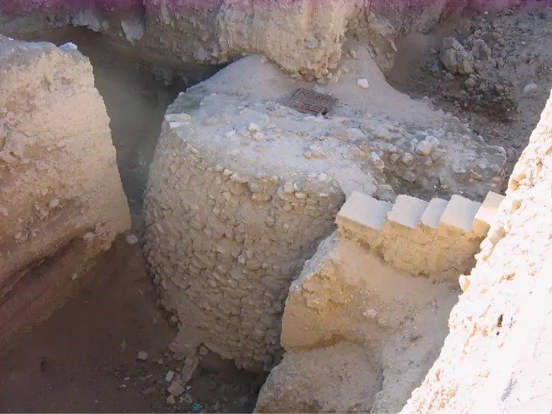
As another example, consider a decorated skull found in Neolithic Jericho (Figure 3.6). An ancient artisan made it by plastering over a human skull and placing pieces of shell in the eye sockets. Historians and archaeologists have speculated that the people of Jericho venerated such skulls, which may have been seen as relics of ancestors and objects of worship. But perhaps the skull meant something else entirely.
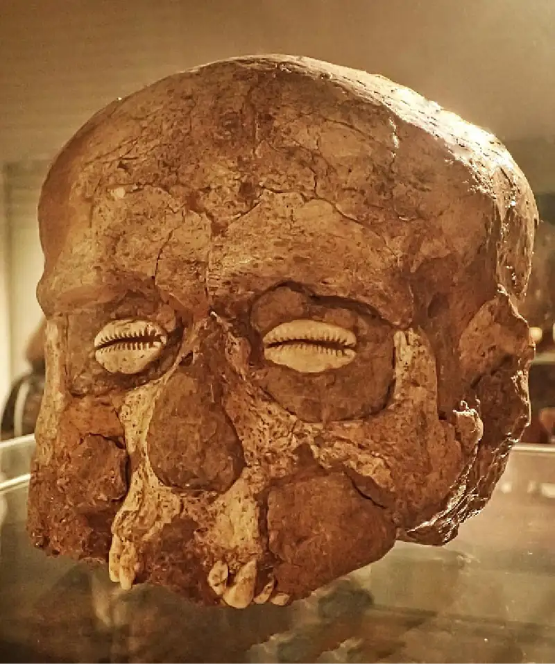
Evidence from the Neolithic city of Çatalhöyük demonstrates that its people venerated bulls. Archaeologists have discovered numerous bucranium (bull heads and horns) at the site (Figure 3.7). But what did these bull symbols mean? Popular interpretation suggests they symbolize the son and lover of an important mother-deity. Other explanations call them female symbols of life and rebirth. Still others propose different interpretations.
![A picture of a room is shown with two beige stone walls and a stone floor with raised platforms on two sides. Eight black, round pots lay around the room in various positions. Most are plain while some have handles on the sides. The wall facing forward has a large square projection sticking out in the middle at the top. The details cannot be seen. Below the projection are three stacked animal heads carved from gray stone with a beige horn on either side of the heads. All have a flat snout but no other details are shown. Another animal head is to the left of the square projection. It is beige with horns and no facial details. Below this head there are two long rectangular alcoves carved into the wall. On the bottom left sits a square stone with maroon and black décor on it. To the right of the three stacked animal heads is a long rectangular piece of the wall cut out with a small square piece of the wall cut out above it. An object of some sort rests in the square cut out section. The wall on the right shows two animal heads hanging stacked on top of each other with horns, flat snouts, and no facial features on a square projection coming out of the wall. Sunlight is shown in patterns on the left walls and a brown box sits at both bottom corners of the picture.](img/osx-worldhist-a03-01-sanctbull.webp)
- What do scholars’ interpretations suggest about the way these artifacts are studied?
- Do their interpretations sound convincing to you? What others can you think of, given what you have read and seen?
The Neolithic cities of Jericho and Çatalhöyük were some of the earliest to emerge. But they are not the only such sites. As early as 7000 BCE, a Neolithic settlement appeared in modern Pakistan, at a site today known as Mehrgarh, whose inhabitants engaged in long-distance trade, grew barley, and raised goats and sheep. Comparable Neolithic settlements in China emerged around 8000 BCE along the Yellow and Yangtze Rivers, where people cultivated millet and rice. A few thousand years later in the Americas, Neolithic settlements sprang up in both Mesoamerica and the Andes Mountains region.
Not all the Neolithic settlements endured. Çatalhöyük, for example, was ultimately abandoned around 6000 BCE and never reoccupied. Jericho, on the other hand, was abandoned and resettled a few times and is still a functioning city today. What is important about these Neolithic settlements is what they can tell us about the long transition between the emergence of agriculture and the eventual rise of early civilizations thousands of years later in places like Mesopotamia, Egypt, and the Indus River valley.
3.2 Ancient Mesopotamia¶
Learning Objectives
By the end of this section, you will be able to:
- Identify characteristics of civilization in Ancient Mesopotamia
- Discuss the political history of Mesopotamia from the early Sumerian city-states to the rise of Old Babylon
- Describe the economy, society, and religion of Ancient Mesopotamia
In the fourth millennium BCE, the world’s first great cities arose in southern Mesopotamia, or the land between the Tigris and Euphrates Rivers, then called Sumer. The ancient Sumerians were an inventive people responsible for a host of technological advances, most notably a sophisticated writing system. Even after the Sumerian language ceased to be spoken early in the second millennium BCE, Sumerian literary works survived throughout the whole of Mesopotamia and were often collected by later cities and stored in the first libraries.
The Rise and Eclipse of Sumer¶
The term Mesopotamia, or “the land between the rivers” in Greek, likely originated with the Greek historian Herodotus in the fifth century BCE and has become the common name for the place between the Tigris and Euphrates Rivers in what is now Iraq. The rivers flow north to south, from the Taurus Mountains of eastern Turkey to the Persian Gulf, depositing fertile soil along their banks. Melting snow and rain from the mountains carry this topsoil to the river valleys below. In antiquity, the river flow was erratic, and flooding was frequent but unpredictable. The need to control it and manage the life-giving water led to the building of cooperative irrigation projects.
Agricultural practices reached Mesopotamia by around 8000 BCE, if not earlier. However, for about two millennia afterward, populations remained quite small, typically living in small villages of between one hundred and two hundred people. Beginning around 5500 BCE, some had begun to establish settlements in southern Mesopotamia, a wetter and more forbidding environment. It was here that the Sumerian civilization emerged (Figure 3.8). By around 4500 BCE, some of the once-small farming villages had become growing urban centers, some with thousands of residents. During the course of the fourth millennium BCE (3000s BCE), urbanization exploded in the region. By the end of the millennium, there were at least 124 villages with about one hundred residents each, twenty towns with as many as two thousand residents, another twenty small urban centers of about five thousand residents, and one large city, Uruk, with a population that may have been as high as fifty thousand. This growth helped make Sumer the earliest civilization to develop in Mesopotamia.
![A map is shown. The Mediterranean Sea is shown to the west, the Red Sea to the southwest, the Persian Gulf in the southeast, and the Caspian Sea to the northeast, all highlighted blue. The Euphrates River and the Tigris River are labelled in the middle of the map. Unlabeled masses of water are shown to the northwest and to the southeast. The land is highlighted off-white. An area in the middle of the map just northwest of the Persian Gulf is indicated with a red circle. The cities labelled inside the red circle are: Babylon, Nippur, Uruk, Ur, and Eridu. A black oval encases the red circle at the bottom and extends northwest covering land almost to the Mediterranean Sea.](img/osx-worldhist-a03-02-m-sumer.webp)
The fourth millennium BCE in Sumer was also a period of technological innovation. One important invention made after 4000 BCE was the process for manufacturing bronze, an alloy of tin and copper, which marked the beginning of the Bronze Age in Mesopotamia. In this period, bronze replaced stone as the premier material for tools and weapons and remained so for nearly three thousand years. The ancient Sumerians also developed the plow, the wheel, and irrigation techniques that used small channels and canals with dikes for diverting river water into fields. All these developments allowed for population growth and the continued rise of cities by expanding agricultural production and the distribution of agricultural goods. In the area of science, the Sumerians developed a sophisticated mathematical system based on the numbers sixty, ten, and one.
One of the greatest inventions of this period was writing. The Sumerians developed cuneiform, a script characterized by wedge-shaped symbols that evolved into a phonetic script, that is, one based on sounds, in which each symbol stood for a syllable (Figure 3.9). They wrote their laws, religious tracts, and property transactions on clay tablets, which became very durable once baked, just like the clay bricks the Sumerians used to construct their buildings. The clay tablets held records of commercial exchanges, including contracts and receipts as well as taxes and payrolls. Cuneiform also allowed rulers to record their laws and priests to preserve their rituals and sacred stories. In these ways, it helped facilitate both economic growth and the formation of states.
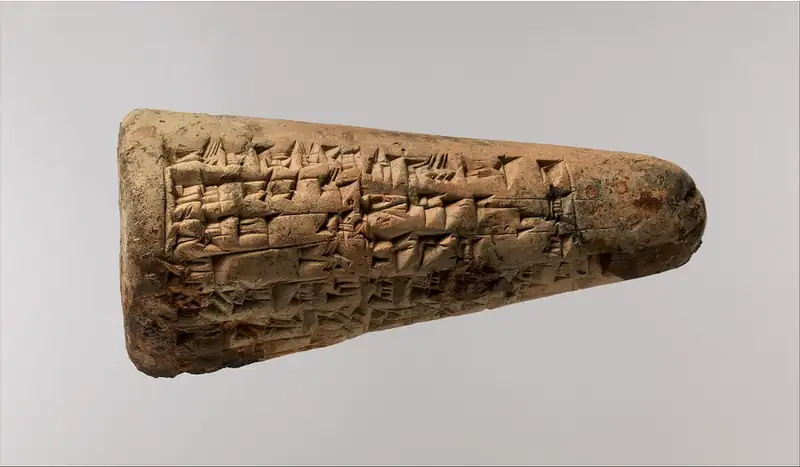
Dueling Voices: The Invention of Writing in Sumer
Writing developed independently in several parts of the world, but the earliest known evidence of its birth has been found in Sumer, where cuneiform script emerged as a genuine writing system by around 3000 BCE, if not earlier. But questions remain about how and why ancient peoples began reproducing their spoken language in symbolic form.
Archaeologist Denise Schmandt-Besserat argued in the 1990s that small clay representations of numbers and objects, often called “tokens,” date from thousands of years before the development of cuneiform writing and were its precursor. These tokens, she believed, were part of an accounting system, and each type represented a different good: livestock, grains, and oils. Some were found within hollow baseball-sized clay balls now called “bullae,” which were marked with pictures of the tokens inside. Schmandt-Besserat believed the pictures portray the type of transaction in which the goods represented by the tokens were exchanged, and thus they were a crucial step toward writing. Over time, she suggested, the marked bullae gave way to flat clay tablets recording the transactions, and the first truly written records emerged (Figure 3.10).
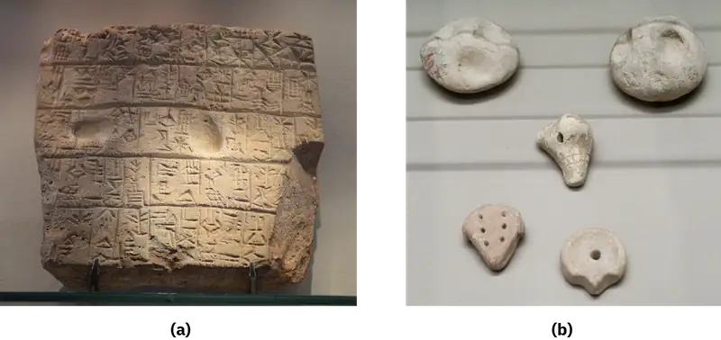
Schmandt-Besserat’s linear interpretation is still one of the best-known explanations for the emergence of writing. But it is hardly the only one. One scholar who offers a different idea is the French Assyriologist Jean-Jacques Glassner. Glassner believes that rather than being an extension of accounting techniques, early writing was a purposeful attempt to render the Sumerian language in script. He equates the development of writing, which gives meaning to a symbol, to the process by which Mesopotamian priests interpreted omens for divining the future. Writing allowed people to place language, a creation of the gods, under human control. Glassner’s argument is complex and relies on ancient works of literature and various theoretical approaches, including that of postmodernist philosopher Jacques Derrida.
Many disagree with Glassner’s conclusions, and modern scholars concede that tokens likely played an important role, but probably not in the linear way Schmandt-Besserat proposed. Uncertainty about the origin of writing in Sumer still abounds, and the scholarly debate continues.
- Why do you think Schmandt-Besserat’s argument was once so appealing?
- If you lived in a society with no writing, what might prompt you to develop a way to represent your language in symbolic form?
Cuneiform was a very complex writing system, and literacy remained the monopoly of an elite group of highly trained writing specialists, the scribes. But the script was also highly flexible and could be used to symbolize a great number of sounds, allowing subsequent Mesopotamian cultures such as the Akkadians, Babylonians, and many more to adapt it to their own languages. Since historians deciphered cuneiform in the nineteenth century, they have read the thousands of clay tablets that survived over the centuries and learned much about the history, society, economy, and beliefs of the ancient Sumerians and other peoples of Mesopotamia.
The Sumerians were polytheists, people who revered many gods. Each Sumerian city had its own patron god, however, one with whom the city felt a special connection and whom it honored above the others. For example, the patron god of Uruk was Inanna, the goddess of fertility; the city of Nippur revered the weather god Enlil; and Ur claimed the moon god Sin. Each city possessed an immense temple complex for its special deity, which included a site where the deity was worshipped and religious rituals were performed. This site, the ziggurat, was a stepped tower built of mud-brick with a flat top (Figure 3.11). At its summit stood a roofed structure that housed the sacred idol or image of the temple’s deity. The temple complex also included the homes of the priests, workshops for artisans who made goods for the temple, and storage facilities to meet the needs of the temple workers.
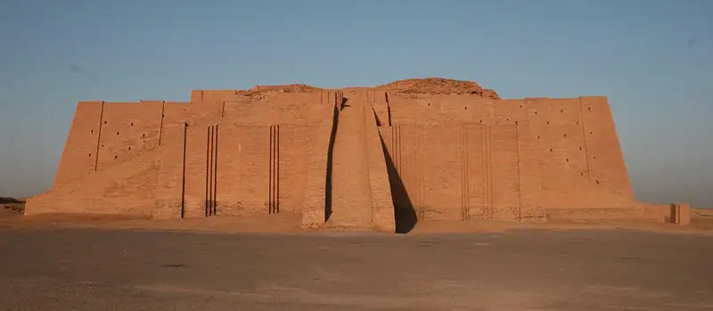
Sumerians were clearly eager to please their gods by placing them at the center of their society. These gods could be fickle, faithless, and easily stirred to anger. If displeased with the people, they might bring famine or conquest. Making sure the gods were praised and honored was thus a way of ensuring prosperity. Praising them, however, implied different things for different social tiers in Sumer. For common people, it meant living a virtuous life and giving to the poor. For priests and priestesses, it consisted of performing the various rituals at the temple complexes. And for rulers honoring the gods, it meant ensuring that the temples were properly funded, maintained, and regularly beautified and enlarged if possible.
By the Early Dynastic Period (c. 2650 BCE–2400 BCE), powerful dynasties of kings called lugals had established themselves as rulers of the cities. In each city, the lugals rose to power primarily as warlords, since the Sumerian cities often waged war against each other for control of farmland and access to water as well as other natural resources. Lugals legitimized their authority through the control of the religious institutions of the city. For example, at Ur, the daughter of the reigning lugal always served as the high priestess of the moon god Sin, the chief deity at Ur.
The lugals at Ur during this period, the so-called First Dynasty of Ur, were especially wealthy, as reflected in the magnificent beehive-shaped tombs in which they were buried. In these tombs, precious goods such as jewelry and musical instruments were stored, along with the bodies of servants who were killed and placed in the tomb to accompany the rulers to the Land of the Dead. One of the more spectacular tombs belonged to a woman of Ur called Pu-Abi, who was buried wearing an elaborate headdress and might have been a queen (Figure 3.12). The most famous lugal in all Sumer in this early period was Gilgamesh of Uruk, whose legendary exploits were recounted later in fantastical form in the Epic of Gilgamesh.
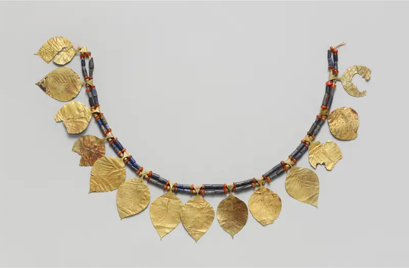
Link to Learning
The Epic of Gilgamesh is one of the world’s earliest examples of epic literature. To understand this ancient tale, first written down in the form we know today around 2100 BCE, read the overview of the Epic of Gilgamesh provided by the Metropolitan Museum of Art, which has a notable collection of ancient Mesopotamian artifacts.
The Rise of the World’s First Empire¶
Around 2300 BCE, the era of the independent Sumerian city-state, a political entity consisting of a city and surrounding territory that it controls, came to an end. Sumer and indeed all of Mesopotamia was conquered by Sargon of Akkad, who created the first-known empire, in this case, a number of regional powers under the control of one person. The word “Akkad” in his name was a reference to the Akkadians, a group that settled in central Mesopotamia, north of Sumer, around the ancient city of Kish. Over time, the Akkadians adopted Sumerian culture and adapted cuneiform to their own language, a language of the Semitic family that includes the Arabic and Hebrew spoken today. They also identified their own gods with the gods of the Sumerians and adopted Sumerian myths. For example, the Akkadians identified the fertility goddess Inanna with their own goddess Ishtar.
Sargon conquered not only Sumer but also what is today northern Iraq, Syria, and southwestern Iran. While the precise details of his origin and rise to power are not known, scholars believe the story Sargon told about himself, at least, has likely been accurately preserved in the Legend of Sargon, written two centuries after his death as a purported autobiography. It is a familiar story of a scrappy young hero born in humble circumstances and rising on his own merits to become a great leader. The Legend relates how, when Sargon was a baby, his unwed mother put him in a basket and cast it on the Euphrates River. A farmer found and raised him, and Ishtar loved Sargon and elevated him from a commoner to a great king and conqueror.
This interesting tale would have certainly been a powerful piece of propaganda justifying Sargon’s rule and endearing him to the common people, and some of it may even be true. But from what historians can tell, Sargon’s rise to power likely occurred during a period of turmoil as his kingdom of Kish, of which he had likely seized control, came under attack by another king named Lugalzagesi. Sargon’s eventual defeat of Lugalzagesi and conquest of all of Sumer proved to be the beginning of a larger conquest of Mesopotamia. The Akkadian Empire that Sargon created lasted for about a century and a half, officially coming to an end in the year 2193 BCE (Figure 3.13).
![Two maps are shown. The map on the left shows land in gray and water in white. A small area is highlighted with a box and then enlarged on the right. The map on the right shows land in a beige color and water in blue. The Diyala River, the Karkeh River, the Tigris, and the Euphrates River are labelled in the northern half of the map, and the Tigris River and the Euphrates River are labelled in the southern half of the map. In the northwest there is an area labelled “Land of Subartu” with a black arrow pointing to the northwest. Below that a bit to the east is land labelled “Akkad” and the “Arabian Desert” is labelled in the southwest. In the middle of the map the land is labelled “Sumer.” The “Land of Dilmun” is labelled and a black arrow points southeast from there. The “Land of Elam” is labelled in the east with a black arrow pointing east and the “Zagros Mountains” are labelled in the northeast. A black dashed line is seen in the northwest running from the city of Samarra southeast past Akkad and then back up again to Samarra. Water in the southwest and south is highlighted with blue dashed lines along to the west of the Euphrates River. Other cities indicated on the map, from north to south are: Eshnunna, Rapiqum, Turub, Akshak, Der, Sippar, Kutha, Jemdet Nasr, Babylon, Kish, Larak, Borsippa, Dilbat, Mashkan-shapir, Nippur, Marad, Puzrish-Dagan, Adab, Isin, Kisurra, Shuruppak, Zabala, Umma, Girsu, Nina, Bad-nibria, Lagash, Uruk, Kutalla, Larsa, Ubaid, Ur, Eridu, and Kuara.](img/osx-worldhist-a03-02-m-sargonempire.webp)
One of the rivals of the Akkadian Empire was the city-state of Ebla, located in northwestern Syria. At some point, its people had adapted Sumerian cuneiform to their own language, which, like Akkadian, belonged to the Semitic family of languages, and archaeologists have discovered thousands of cuneiform tablets at the site. These tablets reveal that Ebla especially worshipped the storm god Adad, who was honored with the title “Ba‘al” or lord. More than one thousand years later in the Iron Age, people in this region still worshipped Baal, who was the main rival of Yahweh for the affections of the ancient Israelites.
Other rivals of the Akkadians were the Elamites, who inhabited the region to the immediate southeast of Mesopotamia in southwest Iran and whose city of Susa arose around 4000 BCE. The art and architecture of the Elamites suggest a strong Sumerian influence. They developed their own writing system around 3000 BCE, even though they adapted Sumerian cuneiform to their language later in the third millennium BCE. The Elamites also worshipped their own distinct deities, such as Insushinak, the Lord of the Dead. Both Elam and Ebla eventually suffered defeat at the hands of the Akkadians.
In the year 2193 BCE, however, the Akkadian Empire collapsed. The precise reason is not entirely clear. However, some ancient accounts point to the incursions of the nomadic Guti tribes, whose original homes were located in the Zagros Mountains of northwestern Iran, northwest of Mesopotamia. These Guti were originally pastoralists, who lived off their herds of livestock and moved from place to place to find pasture for their animals. While the Guti tribes certainly did move into the Akkadian Empire toward its end, modern scholarship suggests that the empire was likely experiencing internal decline and famine before this. The Guti appear to have exploited this weakness rather than triggering it. Regardless, for around a century, the Guti ruled over Sumer and adopted its culture as their own. Around 2120 BCE, however, the Sumerians came together under the leadership of the cities of Uruk and Ur and expelled the Guti from their homeland.
Later Empires in Mesopotamia¶
While Sargon’s empire lasted only a few generations, his conquests dramatically transformed politics in Mesopotamia. The era of independent city-states waned, and over the next few centuries, a string of powerful Mesopotamian rulers were able to build their own empires, often using the administrative techniques developed by Sargon as a model. For example, beginning about 2112 BCE, all Sumer was again united under the Third Dynasty of Ur as the Guti were driven out. The rulers of this dynasty held the title of lugal of all Sumer and Akkad, and they were also honored as gods. They built temples in the Sumerian city of Nippur, which was sacred to the storm god Enlil, the ruler of the gods in the Sumerian pantheon. The most famous lugal of this dynasty was Ur-Nammu (c. 2150 BCE), renowned for his works of poetry as well as for the law code he published.
At its height, the Third Dynasty extended its control over both southern and northern Mesopotamia. But by the end of the third millennium, change was on the horizon. Foreign invaders from the north, east, and west put tremendous pressure on the empire, and its rulers increased their military preparedness and even constructed a 170-mile fortification wall to keep them out. While these strategies were somewhat effective, they appear to have only postponed the inevitable as Amorites, Elamites, and other groups eventually poured in and raided cities across the land. By about 2004 BCE, Sumer had crumbled, and even Ur was violently sacked by the invaders.
Link to Learning
The sack of Ur by the Elamites and others was the inspiration for a lament or song of mourning that became a classic of Sumerian literature. Read The Lament for Urim and pay attention to the way the writer attributes the destruction to the caprice of the gods; the actual invaders are merely tools. For descriptions of the destruction itself, focus on lines 161–229.
In the centuries after 2004 BCE, the migration of Amorites into Mesopotamia resulted in the gradual disappearance of Sumerian as a spoken language. People in the region came to speak Amorite, which belonged to the family of Semitic languages. Nonetheless, scribes continued to preserve and write works in Sumerian and Akkadian cuneiform. Sumerian and Akkadian became the languages of religious rituals, hymns, and prayers, as well as classic literary works such as the Epic of Gilgamesh. Consequently, the literary output of these earlier cultures was preserved and transmitted to the new settlers. When nomadic Amorite tribes settled in Mesopotamia, they eventually established new cities such as Mari, Asshur, and Babylon, and they adopted much of the culture they encountered. The ancient Sumerian cities of Larsa and Isin of this era also preserved these cultural traditions, even as they came under the rule of Amorite kings.
Hammurabi, the energetic ruler of Babylon during the first half of the eighteenth century BCE, defeated the kings of the rival cities of Mari and Larsa and created an empire that encompassed nearly all of Mesopotamia. To unify this new empire, Hammurabi initiated the construction of irrigation projects, built new temples at Nippur, and published his legal edicts throughout his realm. Hammurabi had these edicts inscribed on stone pillars erected in different places in the empire to inform his subjects about proper behavior and the laws of the land. Being especially clear, the Code of Hammurabi far outlived the king who created it. It also provides us with a fascinating window into how Mesopotamian society functioned at this time.
In Their Own Words: The Law in Old Babylon
Remarkable for its clarity, the Code of Hammurabi may have introduced concepts like the presumption of innocence and the use of evidence. It informed legal systems in Mesopotamia for many centuries after Hammurabi’s death (Figure 3.14).
![A picture of a tall rounded piece of black wood is shown on a pedestal behind a brown rope. A glass cabinet with a rounded carving shows in the background on the right and a large doorway leading to an open area is seen on the left. The wood is black and shiny, with some drab areas along the bottom. Some cracks are visible throughout. At the top, the front part is carved out showing a person in long robes and a head covering on the left standing handing something to the person siting in a chair on the right. The person in the chair has long ruffled robes on and a tall, pointed, ruffled hat. Lined items project out of his shoulders.](img/osx-worldhist-a03-02-lawcode.webp)
The Code of Hammurabi promoted the principle that punishment should fit the crime, but penalties often depended on social class:
“199. If [a man] put out the eye of a man’s slave, or break the bone of a man’s slave, he shall pay one-half of its value. 202. If any one strike the body of a man higher in rank than he, he shall receive sixty blows with an ox-whip in public. Many edicts concern marriage, adultery, children, and marriage property. 129. If a man’s wife be surprised with another man, both shall be tied and thrown into the water, but the husband may pardon his wife and the king his slaves. 150. If a man give his wife a field, garden, and house and a deed therefor, if then after the death of her husband the sons raise no claim, then the mother may bequeath all to one of her sons whom she prefers, and need leave nothing to his brothers.”
A good number of the code’s edicts concern the settling of commercial disputes:
“9. If anyone lose an article, and find it in the possession of another [who says] “A merchant sold it to me, I paid for it before witnesses,” . . . The judge shall examine their testimony—both of the witnesses before whom the price was paid, and of the witnesses who identify the lost article on oath. The merchant is then proved to be a thief and shall be put to death. The owner of the lost article receives his property, and he who bought it receives the money he paid from the estate of the merchant. 48. If anyone owe a debt for a loan, and a storm prostrates the grain, or the harvest fail, or the grain does not grow for lack of water; in that year he need not give his creditor any grain, he washes his debt-tablet in water and pays no rent for this year. —"Hammurabi’s Code of Laws,” c. 1780 BCE, translated by L.W. King”
- What do these edicts suggest about the different social tiers in Babylonian society? How were they organized?
- Was marriage similar to or different from marriage today?
- Do the edicts for resolving economic disputes seem fair to you? Why or why not?
While Hammurabi’s empire lasted a century and a half, much of the territory he conquered began falling away from Babylon’s control shortly after he died. The empire continued to dwindle in size until 1595 BCE, when an army of Hittites from central Anatolia in the north (modern Turkey) sacked the city of Babylon. Shortly thereafter, Kassites from the Zagros Mountains of northwestern Iran conquered Babylon and southern Mesopotamia and settled there, unlike the Hittites who had returned to their Anatolian home. The Kassites established a dynasty that ruled over Babylon for nearly five hundred years, to the very end of the Bronze Age. Like the Guti and the Amorites before them, over time, the Kassite rulers adopted the culture of their Mesopotamian subjects.
Society and Religion in Ancient Mesopotamia¶
Thanks to the preservation of cuneiform clay tablets and the discovery and translation of law codes and works of literature, historians have at their disposal a wealth of information about Mesopotamian society. The study of these documents and the archaeological excavations carried out in Mesopotamia have allowed them to reconstruct the empire’s economy.
We know now that temples and royal palaces were not merely princely residences and places for religious rituals; they also functioned as economic redistribution centers. For example, agricultural goods were collected from farmers as taxes by civic and religious officials, who then stored them to provide payments to the artisans and merchants they employed. Palaces and temples thus needed to possess massive storage facilities. Scribes kept records in cuneiform of all the goods collected and distributed by these institutions. City gates served as areas where farmers, artisans, and merchants could congregate and exchange goods. Precious metals such as gold often served as a medium of exchange, but these goods had to be weighed and measured during commercial exchanges, since coinage and money as we understand it today did not emerge until the Iron Age, a millennium later.
Society in southern Mesopotamia was highly urban. About 70 to 80 percent of the population lived in cities, but not all were employed as artisans, merchants, or other traditional urban roles. Rather, agriculture and animal husbandry accounted for a majority of a city’s economic production. Much of the land was controlled by the temples, kings, or other powerful landowners and was worked by semi-free peasants who were tied to the land. The rest of the land included numerous small plots worked by the free peasants who made up about half the population. A much smaller portion was made up of enslaved people, typically prisoners of war or persons who had committed crimes or gone into debt. A man could sell his own children into slavery to cover a debt.
Much of the hard labor performed in the fields was done by men and boys, while the wives, mothers, and daughters of merchants and artisans were sometimes fully engaged in running family businesses. Cuneiform tablets tell us that women oversaw the business affairs of their families, especially when husbands were merchants who often traveled far from home. For example, cuneiform tablets from circa 1900 BCE show that merchants from Ashur in northern Mesopotamia conducted trade with central Anatolia and wrote letters to their female family members back home. Women were also engaged in the production of textiles like wool and linen. They not only produced these textiles in workshops with their own hands, but some appear to have held managerial positions within the textile industry.
Free peasant farmers, artisans, and merchants were all commoners. This put them in a higher social position than the semi-free peasants and slaves but lower than the elite nobility, who made up a very small percentage of the population and whose ranks included priests, official scribes, and military leaders. This aristocratic elite often received land in payment for their services to the kings and collected rents in kind from their peasant tenants. Social distinctions were also reflected in the law. For example, aspects of Hammurabi’s law code called for punishments for causing physical harm to another to be equal to the harm inflicted. This principle is best summarized in the line “an eye for an eye and a tooth for a tooth.” However, the principle applied only to victims and perpetrators of the same social class. An aristocrat convicted of the murder of a fellow noble paid with their life, while an aristocrat who harmed or murdered a commoner might be required only to pay a fine.
Men and women were not equal under the Code of Hammurabi. A man was free to have multiple wives and divorce a wife at will, whereas a woman could divorce her husband only if she could prove he had been unkind to her without reason. However, a woman from a family of means could protect her position in a marriage if her family put up a dowry, which could be land or goods. Upon marriage, the husband obtained the dowry, but if he divorced or was unkind to his wife, he had to return it to her and her family.
Cuneiform tablets have also allowed historians to read stories about the gods and heroes of Mesopotamian cultures. Mesopotamians revered many different gods associated with forces of nature. These were anthropomorphic deities who not only had divine powers but also frequently acted on very human impulses like anger, fear, annoyance, and lust. Examples include Utu, the god of the sun (Figure 3.15); Inanna (known to the Akkadians as Ishtar), the goddess of fertility; and Enlil (whose equivalent in other Mesopotamian cultures was Marduk), the god of wind and rain. The ancient Mesopotamians held that the gods were visible in the sky as heavenly bodies like stars, the moon, the sun, and the planets. This belief led them to pay close attention to these bodies, and over time, they developed a sophisticated understanding of their movement. This knowledge allowed them to predict astronomical events like eclipses and informed their development of a twelve-month calendar.
![A picture of a white stone carving is shown. Designs are carved along the top and wavy lines along the bottom. On the left there is a tall, thin, column carved with squares and three curly posts on top. Inside the designs, a carving of a man is shown in long robes etched with wavy lines, a long wavy beard, a tall pointy, striped hat, and holding a ring and stick in his right hand. He sits on a box decorated with etchings on the perimeter. Inside the box is a carving of two people with beards facing away from each other. Above the ring and stick in the man’s hand there are two rows of etchings in a rectangle and three circles above that, the first showing a moon, the second and third showing a sun. The background is smooth stone.](img/osx-worldhist-a03-02-utu.webp)
People in Mesopotamia believed human beings were created to serve the gods (Figure 3.16). They were expected to supply the gods with food through the sacrifice of sheep and cattle in religious rituals, and to honor them with temples, religious songs or hymns, and expensive gifts. People sought divine support from their gods. But they also feared that their worship might be insufficient and anger the deity. When that happened, the gods could bring death and devastation through floods and pestilence. Stories of gods wreaking great destruction, sometimes for petty reasons, are common in Mesopotamian myths. For example, in one Sumerian myth, the storm god Enlil nearly destroyed the entire human race with a flood when the noise made by humans annoyed him and kept him from sleep.
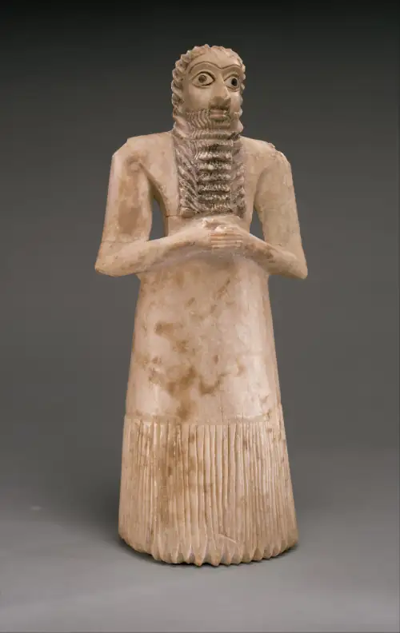
The ancient Mesopotamians’ belief that the gods were fickle, destructive, and easily stirred to anger is one reason many historians believe they had a generally pessimistic worldview. From the literature they left behind, we can see that while they hoped for the best, they were often resigned to accept the worst. Given the environment in which Mesopotamian civilization emerged, this pessimism is somewhat understandable. River flooding was common and could often be unpredictable and destructive. Wars between city-states and the destruction that comes with conflict were also common. Life was difficult in this unforgiving world, and the profiles of the various gods of the Mesopotamians reflect this harsh reality.
Evidence of Mesopotamians’ pessimism is also present in their view of the afterlife. In their religion, after death all people spent eternity in a shadowy underworld sometimes called “the land of no return.” Descriptions of this place differ somewhat in the details, but the common understanding was that it was a gloomy and frightening place where the dead were consumed by sorrow, eating dust and clay and longing pitifully and futilely to return to the land of the living.
3.3 Ancient Egypt¶
Learning Objectives
By the end of this section, you will be able to:
- Discuss the unification of Ancient Egypt and the development of a distinct culture there
- Analyze the accomplishments of the pharaohs under the Old Kingdom
- Describe the changes in government and society in Egypt during the Middle Kingdom
The rich agricultural valleys historians refer to as the “Fertile Crescent,” due to the shape of this region on the map, witnessed the development of an early civilization as long ago as the fourth millennium BCE. Adjacent to this region was another fertile river valley formed by the Nile in northeast Africa. Here arose another civilization that was quite unique. Unlike the city-states of Sumer, which were not organized into an empire until the time of Sargon of Akkad, the peoples of the Nile River valley were brought together under a single ruler around 3150 BCE. Although brief intervals of disunity occurred, Egypt remained a united and powerful kingdom, the great superpower of the ancient Near East, until the end of the Bronze Age in about 1100 BCE.
The Origins of Ancient Egypt¶
Aside from the Nile, Egypt and the areas around it are today part of the expansive and very arid Sahara. But around 10,000 BCE, as the Neolithic Revolution was getting underway in parts of southwestern Asia, much of North Africa including Egypt was lush, wet, and dotted with lakes. The region was highly hospitable to the many Paleolithic peoples living there and surviving on its abundant resources.
However, beginning around 6000 BCE the grasslands and lakes began to give way to sand as the once green environment was transformed into the Sahara we recognize today. As the environment became more difficult for humans to survive in, they retreated to oases and rivers on the fringes. One of these areas was the Nile River valley, a long thin area of fertility running through the deserts of eastern North Africa and made possible by the regular flooding of the Nile. The Nile is the longest river in Africa, and the second-longest in the world after the Amazon. It originates deep in central Africa and flows thousands of miles north through Egypt before it spills into the Mediterranean Sea.
It was around this same time, about 7000 to 6000 BCE, that agricultural technology and knowledge about the domestication of wheat, barley, sheep, goats, and cattle were introduced into the Nile River valley, likely through contact with the Levant. The earliest evidence for the emergence of Egyptian culture dates from this era as well. Two related but different Neolithic cultures arose: one in the Nile delta, where the river runs into the Mediterranean, and the other upriver and to the south of this location. The people of these cultures lived in crude huts, survived on fishing and agriculture, developed distinctive pottery styles, and even practiced burial rituals. Over thousands of years, they developed into two separate kingdoms, Lower Egypt or the delta region, and Upper Egypt or the area upriver (Figure 3.17).
![A picture of two maps is shown. The map on the left shows the northeastern portion of Africa, the southeastern portion of Europe, Turkey, Georgia, Armenia, Azerbaijan, Syria, Cyprus, Lebanon, Israel, Jordan, Iraq, Saudi Arabia, Kuwait, Bahrain, Qatar, the United Arab Emirates, and Oman. The Adriatic Sea, the Black Sea, the Caspian Sea, the Mediterranean Sea, the Red Sea, the Persian Gulf (Arabian Gulf), and the Arabian Sea are labelled. An upside-down U-shaped area is highlighted green from Egypt, northeast through the northwestern coast of Israel, through Lebanon, through most of Syria and into the southeastern portion of Turkey. Then it heads southeast through Iraq and into Iran, ending at the northern part of the Persian Gulf (Arabian Sea). Various cities are labelled throughout the map. An area in the northeast corner of Africa is encased in a red box and enlarged as a second map in the top right. This map shows the city of Cairo and the Nile River. Most of the area shown is highlighted green with an upside-down triangular-shaped portion highlighted orange starting at Cairo and heading north to the Mediterranean Sea.](img/osx-worldhist-a03-03-m-fertcres.webp)
A major political and cultural shift occurred in about 3150 BCE when Upper and Lower Egypt were unified into a single powerful kingdom. Some evidence suggests this achievement belongs to a king named Narmer. More recent records attribute it to a king called Menes, but many scholars now believe Menes and Narmer are one and the same (Figure 3.18).
![A picture of two arrow-shaped gray stones is shown on a black background. Both have rounded points along the bottom and along the longer top there are carving of bulls on either end, with their curly horns creating the shapes at the top of the stone. The stone on the left shows three rows of images. The top row shows two bulls with curly horns and etchings in between them. The second row shows a very tall person with a cloth at their waist, a tall, rounded hat on their head, a thin beard, bare-chested, and barefoot. He holds a long stick in his right hand and his left hand rests on the head of a man in a loincloth and headdress kneeling on the ground in front of him. Above the kneeling man is a bird standing on one leg on top of six tall mushroom-like projections coming out of a platform with a head at the left. His other foot is holding a stick that is attached to the nose of the head on the platform. To the left of the large man is another man standing in a loincloth holding objects with a sword at his side. The third row at the bottom shows two figures in minimal loincloths and headdresses running to the right and looking to the left. The stone on the right shows four rows of images. The top row shows two bulls with curly horns and etchings in between them. The second row shows four small people in the middle walking toward the right, holding tall staffs with various animals and items at the tops. To the left of this group are three people, all dressed with cloths around their waists and headdresses of various types. They carry various items. The one in the middle is very large compared to the other two. To the right of the middle group there are two columns of five headless bodies stacked on top of each other. A bird and some etchings are shown above the bodies. The third row shows two four-legged animals with long necks intertwined and then facing each other. A person on either side holds a rein that is looped around the animal’s neck. The last row shows a bull with its head pointed down looking at a person running away from them below them. Some designs are etched are on the right side. Throughout the stones are minor scratches and white spots.](img/osx-worldhist-a03-03-narmerpal2.webp)
Unification gave rise to what scholars refer to as the Early Dynasty Period (about 3150 to 2613 BCE), or the era of the earliest dynasties to rule a unified Egypt. The powerful kings of these dynasties established a bureaucratic system, possibly influenced by the palace/temple redistributive economic system in place in ancient Sumer. But unlike Mesopotamia, ancient Egypt in the Bronze Age was now a single state instead of a number of warring rivals. Also unlike Mesopotamia, which was subject to periodic invasion, Egypt was protected by its geography. On both east and west, the Nile River valley was surrounded by large deserts that were difficult to cross and that made the kingdom into a kind of island in a hot, dry sea. During this time, many of the best-known cultural characteristics of ancient Egypt emerged in their earliest forms. They include the institution of the pharaoh, distinctive religious practices, and the Egyptian writing system.
The Pharaoh¶
The king of the united Egypt, the pharaoh, governed a kingdom much larger than any contemporary realm. Historians estimate that the population of the Egyptian state, when first united in about 3150 BCE, numbered as many as two million people, whereas a typical Sumerian lugal ruled about thirty thousand subjects. The temple/palace system in Egypt therefore operated on a much vaster scale than anywhere in Mesopotamia.
The term pharaoh in ancient Egyptian is translated as “big house,” likely a reference to the size of the palaces along the Nile valley where the pharaoh resided and administered the lands. As in ancient Mesopotamia, the palace included large facilities for storing taxes in kind, as well as workshops for artisans who produced goods for the palace. Also, as in Mesopotamia, a large portion of the population were peasant farmers. They paid taxes in kind to support the artisans and others working in the pharaoh’s palaces and temples and living nearby, inside the city. The ruling elite included scribes, priests, and the pharaoh’s officials.
The pharaoh was not merely a political figure but also served as the high priest and was revered as a god. In the role of high priest, the pharaoh united the lands by performing religious rituals to honor the different gods worshipped up and down the Nile River valley. As a deity, the pharaoh was the human form or incarnation of Horus, the god of justice and truth. Egyptians believed the divine presence of the pharaoh as Horus maintained justice throughout the land, which, in turn, maintained peace and prosperity, as evidenced by the welcome annual flooding of the Nile.
Egyptian Religion¶
Like the people of Mesopotamia, Ancient Egyptians were polytheists and worshipped many deities who controlled the forces of nature. For example, Re was the god of the sun, and Isis was the earth goddess of fertility. Osiris was associated with the Nile. The annual flooding of the river, the central event of the Egyptian year, was explained through the myth of Osiris, who was murdered by his brother Seth, the god of the desert wind, but then resurrected by his devoted wife Isis. The Nile (Osiris) was at its lowest in the summer when the hot desert wind was blowing (Seth), but then it was “resurrected” when it flooded its banks and brought life-giving water to the earth (Isis). Horus (the pharaoh) was the child of Isis and Osiris. Since Osiris was a god who had died, he was also the lord of the underworld and the judge of the dead. Ancient Egyptians believed Osiris would reward people who had lived a righteous life with a blessed afterlife in the underworld, whereas he would punish wicked evildoers.
As these gods and myths indicate, the Nile played an important role in the development of Egyptian religion. Whereas the unpredictable flooding of the Tigris and Euphrates Rivers in southern Mesopotamia commonly brought destruction along with fresh alluvial deposits, the Nile’s summer flooding, predictable as clockwork, brought only welcome deposits of rich sediment. It provided Egyptians with a sense that the world was harmonious and organized around cycles. In later centuries, this notion developed into the concept of Ma’at (also personified as a goddess), which combined the ideas of order, truth, justice, and balance. In contrast to the apparently pessimistic people in Mesopotamia, Egyptians drew from their environment a feeling that their world was orderly, balanced, and geared toward a sense of cosmic justice. It was an Egyptian’s responsibility to live in harmony with this order.
In Their Own Words: Flooding, Stories, and Cosmology in Ancient Egypt and Sumer
Ancient Egypt (the first excerpt that follows) and Ancient Sumer (the second) both depended on life-giving rivers, but their reactions to periodic flooding were quite different. Note the way each discusses the flooding, those responsible, and the reasons for it.
“Hymn to the flood. Hail flood!
emerging from the earth, arriving to bring Egypt to life,
hidden of form, the darkness in the day,
the one whose followers sing to him, as he waters the plants,
created by Re to make every herd live,
who satisfies the desert hills removed from the water,
for it is his due that descends from the sky
—he, the beloved of Geb, controller of Nepri,
the one who makes the crafts of Ptah verdant.
Lord of fish, who allows south marsh fowl,
without a bird falling from heat.
Maker of barley, grower of emmer grain,
creator of festivals of the temples.
When he delays, then noses are blocked,
everyone is orphaned,
and if the offerings of the gods are distributed,
then a million men perish among mankind. . . .
Verdant the spirit at your coming, O Flood.
Verdant the spirit at your coming.
Come to Egypt,
make its happiness.
Make the Two Riverbanks verdant, . . .
Men and herds are brought to life by your deliveries of the fields, . . .
Verdant the spirit at your coming, O Flood. —Author unknown, Hymn to the Nile, 2000–1700 BCE”“I will reveal to you, O Gilgamesh, the mysterious story,
And one of the mysteries of the gods I will tell you.
The city of Shurippak, a city which, as you know,
Is situated on the bank of the river Euphrates. The gods within it
Decided to bring about a flood, even the great gods,
As many as there were. . . .
I saw the approach of the storm,
And I was afraid to witness the storm;
I entered the ship and shut the door.
I entrusted the guidance of the ship to the boat-man,
Entrusted the great house, and the contents therein.
As soon as early dawn appeared,
There rose up from the horizon a black cloud,
Within which the weather god thundered,
And the king of the gods went before it. . . .
The storm brought on by the gods swept even up to the heavens,
And all light was turned into darkness. It flooded the land; it blew with violence;
And in one day it rose above the mountains.
Like an onslaught in battle it rushed in on the people.
Brother could not save brother.
The gods even were afraid of the storm;
They retreated and took refuge in the heaven of Anu.
There the gods crouched down like dogs, in heaven they sat cowering. —Author unknown, Epic of Gilgamesh, translated by R. Campbell Thompson and William Muse Arnold and compiled by Laura Getty”
- What do these excerpts reveal about each people’s view of their world and the supernatural?
- What do they suggest about each culture’s relationship to its river(s)?
Egyptian Writing¶
Egyptians developed their own unique writing system, known today by the Greek word hieroglyphics (meaning “sacred writings”), though the Egyptians called it medu-netjer (“the god’s words”). The roots of hieroglyphic writing can be traced to the time before the Early Dynastic Period when the first written symbols emerged. But by at least 3000 BCE, the use of these symbols had developed into a sophisticated script. It used a combination of alphabetic signs, syllabic signs, word signs, and pictures of objects. In this complicated system, then known only to highly trained professional scribes, written symbols represented both sounds and ideas (Figure 3.19). The Egyptians also developed a simplified version of this hieroglyphic script known as hieratic, which they often employed for more mundane purposes such as recordkeeping and issuing receipts in commercial transactions.
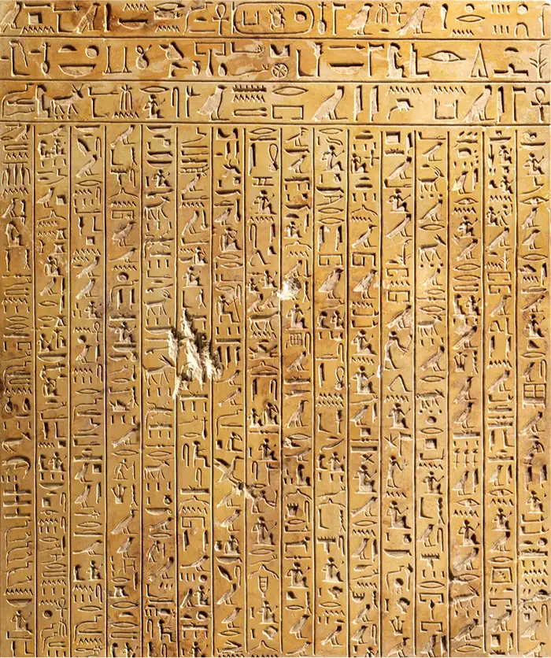
Egyptian scribes recorded their ideas in stone inscriptions on the walls of temples and painted them on the walls of tombs, but they also used the fibers from a reed plant growing along the banks of the Nile to produce papyrus, a writing material like paper that could be rolled into scrolls and stored as records. Some of these papyrus rolls have survived for thousands of years because of the way the dry heat preserved them, and they proved very useful for modern historians and archaeologists after hieroglyphics were deciphered in the nineteenth century. They preserved Egyptian myths and poetry, popular stories, and lists of pharaohs, along with records of the daily life of ancient Egyptians.
The Age of Pyramid Building¶
By the 2600s BCE, the power of the pharaohs and the sophistication of the state in Egypt were such that the building of large-scale stone architecture became possible. Historians in the nineteenth century believed the significance of these developments was so great that it required a different name for the period. Today we call it the Old Kingdom (2613–2181 BCE), and it is best known for the massive stone pyramids that continue to awe visitors to Egypt today, many thousands of years after they were built (Table 3.1).
Table 3.1 The Ages of Egypt. These names for the different eras of ancient Egypt’s history were developed by scholars in the nineteenth century. “Kingdom” describes a period of high centralized state organization. “Intermediate” describes a time of weak centralized state organization. While flawed in some ways, the labels continue to influence the way we understand the expansive chronology of ancient Egyptian history. (source: https://www.worldhistory.org/egypt/)
| 6000–3150 BCE | Pre-Dynastic Egypt |
| 3150–2613 BCE | Early Dynastic Egypt |
| 2613–2181 BCE | Old Kingdom Period |
| 2181–2040 BCE | First Intermediate Period |
| 2040–1782 BCE | Middle Kingdom Period |
| 1782–1570 BCE | Second Intermediate Period |
| 1570–1069 BCE | New Kingdom Period |
| 1069–525 BCE | Third Intermediate Period |
The pyramids were tombs for the pharaohs of Egypt, places where their bodies were stored and preserved after death. The preservation of the body was important and was directly related to Egyptian religious beliefs that a person was composed of a number of different elements. These included the Ka, Ba, Ahk, and others. A person’s Ka was their spiritual double. After the physical body died, the Ka remained but had to stay in the tomb with the body and be nourished with offerings. The Ba was also a type of spiritual essence, but it separated from the body after death, going out in the world during the day and returning to the body each night. The duty of the Ahk, yet another type of spirit, was to travel to the underworld and the afterlife. The belief in concepts like the Ka and Ba was what made the practice of mummification and the creation of tombs important in Egyptian religion. Both elements needed the physical body to survive.
Before the pyramids, tombs and other architectural features were built of mud-brick and called mastabas. But during the Early Dynastic reign of the pharaoh Djoser, just before the start of the Old Kingdom, a brilliant architect named Imhotep decided to build a marvelous stone tomb for his king. Originally, it was intended to be merely a stone mastaba. However, Imhotep went beyond this plan and constructed additional smaller stone mastabas, one on top of the other. The result was a multitiered step pyramid (Figure 3.20). Surrounding it, Imhotep built a large complex that included temples.
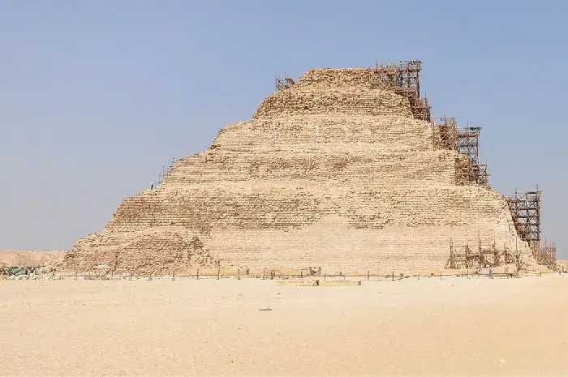
The step pyramid of Djoser was revolutionary, but the more familiar smooth-sided style appeared a few decades later in the reign of Snefru, when three pyramids were constructed. The most impressive has become known as the Red Pyramid, because of the reddish limestone revealed after the original white limestone surface fell away over the centuries. It had smooth sides and rose to a height of 344 feet over the surrounding landscape. Still an impressive sight, it pales in comparison to the famed Great Pyramid built by Snefru’s son Khufu at Giza near Cairo (Figure 3.21). The Great Pyramid at Giza was 756 feet long on each side and originally 481 feet high. Its base covers four city blocks and contains 2.3 million stone blocks, each weighing about 2.5 tons. Even more than the Pyramid of Djoser, the Great Pyramid is a testament to the organization and power of the Egyptian state.
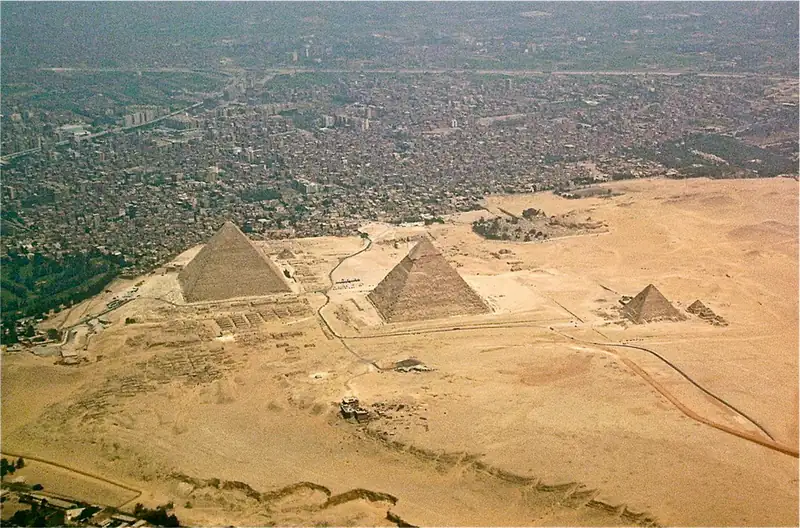
Later pharaohs of the Old Kingdom built two additional but slightly smaller pyramids at the same location. All align with the position of the Dog Star Sirius in the summer months, when the Nile floods each year. Each was also linked to a temple along the Nile dedicated to the relevant pharaoh.
Egyptian rulers invested heavily in time and resources to construct these tombs. In the mid-fifth century BCE, the ancient Greek historian Herodotus recorded that the pyramid of Khufu took 100,000 workers twenty years to construct. Herodotus lived two thousand years after this pyramid was built, however, so we might easily dismiss his report as exaggeration. Modern archaeologists suspect that a much smaller but still substantial workforce of around twenty thousand was likely employed. Excavations at the site reveal that these workers lived in cities built nearby that housed them as well as many others dedicated to feeding and caring for them. The workers were not enslaved, as is commonly assumed. Indeed, they likely enjoyed a higher standard of living than many other Egyptians at the time.
As the pyramid and temple complexes became larger and more numerous during the Old Kingdom, so too did the number of priests and administrators in charge of managing them. This required that ever-increasing amounts of wealth be redirected toward these individuals from the central state. Over time, the management of the large Egyptian state also required more support from the regional governors or nomarchs and administrators of other types, which meant the pharaohs had to delegate more authority to them. By around 2200 BCE, priests and regional governors possessed a degree of wealth and power that rivaled and sometimes surpassed that of the nobility. For all these reasons and more, centralized power in Old Kingdom Egypt weakened greatly during this time, and scholars since the nineteenth century have referred to it as the First Intermediate Period.
Scholars once claimed that this was a time of chaos and darkness. As evidence, they noted the decline in the building of large-scale monuments like the giant pyramids as well as a drop in the quality of artwork and historical records during these decades. Modern research, however, has demonstrated that this is a gross simplification. Power wasn’t necessarily lost so much as redistributed from central to regional control. From the perspective of the reigning noble families, this may have seemed like chaos and disorder. But it was not necessarily the dark age older generations of historians believed it to be.
A Second Age of Egyptian Greatness¶
The First Intermediate Period came to an end around 2040 BCE as a series of powerful rulers, beginning with Mentuhotep II, was able to reestablish centralized control in Egypt. This led to the rise of what we now call the Middle Kingdom Period, which lasted nearly 260 years.
In the year 1991 BCE, Amenemhat, a former vizier (adviser) to the line of kings who established the Middle Kingdom, assumed control and founded a line of pharaohs who ruled Egypt for two centuries. Under the leadership of these pharaohs, Egypt acquired its first standing army, restarted the large-scale building projects known in earlier times, made contacts with surrounding peoples and kingdoms in the Levant and in Kush (modern Sudan), and generally held itself together with a strong centralized power structure.
Link to Learning
New Kingdom pharaohs circulated a work of literature that foretold the rise of Amenemhat, who would bring an end to disorder and restore Egypt to prosperity. This ancient work was called the Prophecy of Neferty and is presented as an English translation by University College London.
During the Middle Kingdom Period, pharaohs introduced the cult of the deity Amon-Re at Thebes. Amon-Re was a combination of the sun-god Re, the creator god worshipped in the north of Egypt, and Amon, a sky god revered in the south. He was portrayed as the king of the gods and the father of each reigning pharaoh. The pharaohs of the Middle Kingdom no longer constructed massive pyramids for their tombs. Instead, they focused on erecting massive temples to Amon-Re and his wife, the mother-goddess Mut, at Thebes (Figure 3.22). The ruins of these temples are located at Karnak in southern Egypt. Amon-Re’s temples featured immense halls in which multiple columns or colonnades supported the roof, courtyards, and ceremonial gates. They housed the sacred images of the deities, which on festival days were brought out in ritual processions.
![A picture of a stone building in ruins is shown. Two rows of five tall sandy-colored stone columns stand in a row in the middle. Pieces are missing at the top and parts of the columns are missing bricks. In between the columns a large group of people can be seen standing and walking in various types of clothing. On both sides of the columns a two-tiered building can be seen in ruins. Wall and roofs are missing from the top tiers and large openings with tall decorated columns can be seen on the bottom tiers and pieces on the second tiers. In the forefront of the picture on both sides large pieces of sandy-colored stone can be seen laying on the ground, some atop each other. The ground is flat and sandy-colored and a blue sky with pale white clouds can be seen in the background.](img/osx-worldhist-a03-03-tempkarnak.webp)
Middle Kingdom Egypt reached its height in the 1870s and 1860s BCE during the reign of Senusret III, a powerful warrior pharaoh and capable administrator of the centralized state. He greatly expanded Egypt’s territorial control, leading armies up the Nile into Kush and into the Levant. These efforts not only strengthened Egypt’s ability to protect itself from invasion but also greatly increased the flow of trade from these regions. Kush was known for its rich gold deposits and capable warriors, and Senusret III’s several campaigns there brought Egypt access not only to the gold but also to mercenaries from Kush.
Senusret also dramatically increased the degree of centralized power held by the pharaoh, reducing the authority and even the number of the nomarchs. Overall, Egypt now grew wealthier, safer, more centralized, and more powerful than it had ever been. As a result, his reign was also a time of cultural flourishing when Egyptian art, architecture, and literature grew in refinement and sophistication (Figure 3.23).
![A picture of a piece of jewelry is shown. Across the bottom is a thin, long piece inlaid with red, blue, and aquamarine colored shapes (triangles and rectangles) and outlined with gold. Atop this piece in the middle an aquamarine colored person can be seen kneeling in a red waistcloth, gold beard, and blue ornamental headdress. Their arms are outstretched holding on to a carved blue and gold M-shaped arch. A blue and gold object hangs from their right arm. Above the M-shaped arch is a cartouche inlaid with red and aquamarine rectangles outlined with gold. Inside, from the top, a red circle is shown, then a colorful half circle, then an insect with blue stones and gold outlines. On either side of the cartouche are two bird-like animals in blue and aquamarine stones outlined in gold, with a snake on their heads in red, blue, and aquamarine with gold outlines, with an ankh cross hanging from each of their necks. One bird leg is standing on a red circle outlined in gold atop the long thin piece across the bottom and the other leg is grasping the M-shaped figure with the person kneeling.](img/osx-worldhist-a03-03-e-art.webp)
The deaths of Senusret III and his son Amenemhat III led indirectly to a rare but not unprecedented transfer of royal power to an Egyptian woman. Possibly Amenemhat IV’s wife, sister, or both, Sobekneferu, the daughter of Amenemhat III, was the first woman to rule Egypt since before the Old Kingdom. She reigned for only a few years, and little is known of her accomplishments. But scholars have determined that she was the first pharaoh to associate herself with the Egyptian crocodile god Sobek. She may even have commissioned the construction of the city of Crocodilopolis to honor this important god. Because she died without having had children, she was the last in the long series of pharaohs in the line of Amenemhat I.
Even before the reign of Sobekneferu, Egypt was already experiencing some degree of decline. Over the next century, the pharaohs and their centralized control became steadily weaker. Increasing numbers of Semitic-speaking peoples from the Levant flowed into Egypt, possibly the result of increased trade between Egypt and the Levant at first. But by the late 1700s BCE, these Semitic-speaking groups had grown so numerous in the Nile delta region and centralized control of Egypt had grown so weak that some of their chieftains began to assert control in a few areas. The Egyptians called these Semitic-speaking chieftains Heqau-khasut (rulers of foreign lands). Today they are more commonly called Hyksos, a Greek corruption of this Egyptian name.
By the time the Hyksos were asserting their control over parts of the Nile delta, Egypt was already well into what historians of the nineteenth century dubbed the Second Intermediate Period. Like the First Intermediate Period, the second was a time of reduced centralized control. Not only did the Egyptian nobles, ruling from their capital in Thebes, lose control of the delta, they also lost territory upriver to an increasingly powerful kingdom of Kush in the south. This meant that the territory once controlled by the powerful centralized state bureaucracy was effectively split into three regions: one ruled by Hyksos in the north, one by Kushite in the south, and one by the remnants of the Egyptian nobility in the center.
Despite the fragmentation, for most of this period, the three regions of Egypt appear to have maintained peaceful relationships. That changed, however, beginning in the 1550s BCE when a string of Theban Egyptian rulers was able to go on the offensive against the Hyksos. After the Hyksos were defeated and the Nile delta recaptured, the emboldened Egyptians turned their attention south to Kush, eventually extending their control over these regions as well. These efforts ushered in a new period of Egyptian greatness called the New Kingdom, the highest high-water mark of Egyptian power and cultural influence in the ancient world.
3.4 The Indus Valley Civilization¶
Learning Objectives
By the end of this section, you will be able to:
- Analyze the growth, development, and decline of the Indus valley culture
- Describe the cities of Mohenjo-Daro and Harappa
- Identify key themes in Indus valley religion and culture
More than fifteen hundred miles east of Mesopotamia, in the fertile valley of the Indus River, another early civilization developed in the early third millennium BCE as a peer of ancient Sumer. Early in the second millennium BCE, however, the cities of this Indus valley culture experienced decline. Lacking written records, historians have only cultural artifacts on which to base any speculation about the rise and fall of this spectacular culture, which undoubtedly influenced subsequent civilizations that arose in South Asia.
The Origins of the Indus Valley Civilization¶
The Indus River flows from the Himalayan Mountains south into the Indian Ocean, depositing rich alluvial soil from the mountains along its banks. Its valley (in modern Pakistan and India) thus provided a hospitable environment for population growth for the emerging Indus valley civilization (c. 2800 BCE–1800 BCE).
Evidence for the domestication of plants and animals in this region dates to about 7000 BCE, but the process may have begun earlier. It is likely that agriculturalists in the region adopted barley and wheat cultivation techniques from the Near East, where people had been practicing agriculture for thousands of years by this point. However, it is also possible that the people of the Indus valley developed some of these techniques independently. Regardless, by about 5000 BCE, they were clearly in contact with the civilizations in Egypt and Sumer.
The farmers of the Indus valley cultivated wheat and barley as well as raised cattle and sheep, as did the farmers of Mesopotamia and western Asia. They also domesticated and cultivated bananas and cotton for cloth production, which were both unknown in ancient Mesopotamia. Thanks to the Neolithic Revolution, which secured a stable food source and stimulated population growth, people began living in settled communities along the Indus River valley as a new early civilization developed.
Beginning around 2800 BCE, the Indus valley entered a new phase in its development with the growth of a great number of urban centers. The two largest cities emerged at what are now the archaeological sites of Harappa in the northeast and Mohenjo-Daro to the southeast and downriver. Other large urban centers existed at Dholavira, Ganeriwala, and Rakhigarhi, along with many smaller but similarly organized cities scattered across the valley. By the time this civilization reached its height around 2000 BCE, more than one thousand urban centers of varying sizes were spread across the expansive region (Figure 3.24).
![A map is shown with land in beige and water in blue. The Arabian Sea is labelled in the southwest and the Bay of Bengal is labelled in the southeast. A “C” shaped area off the northeastern coast of the Arabian Sea is highlighted orange and the Indus River runs through the middle, from northeast to southwest. Areas labelled with red dots, from north to south, in this orange area are: Harappa, Ganweriwala, Rakhigarhi, Mohenjo-Daro, and Dholavira. Cities labelled with black dots in this orange area are, from north to south: Manda, Rehman Dheri, Nausharo, Ropar, Banawali, Kalibangan, Mitathal, Sutkagen-Dor, Sotka Koh, Ghazi Shah, Kot Diji, Balakot, Chanhu-Daro, Amri, Allahdino, Surkotada, Kuntasi, and Lothal. A small oval area in the far north is also highlighted orange with the city of Shortugai labelled with a black dot within.](img/osx-worldhist-a03-04-m-indusvalleyciv.webp)
Despite the large size of this civilization, its existence was unknown to modern scholars until the early nineteenth century when British excavations revealed the ancient city of Harappa. Because Harappa was the first major site discovered by archaeologists, the term Harappan often appears as a synonym for Indus valley civilization.
The archaeological sites of Harappa in the north and Mohenjo-Daro in the south have received the most study of all the Indus valley cities and remain the best known. At their height, they likely had populations of about thirty thousand people each. The political organization across the Indus valley remains imperfectly understood, but it may have consisted of a collection of independent city-states, such as existed in ancient Sumer. It is equally plausible, however, that the few large cities functioned as regional capitals ruling over the surrounding smaller ones. The fact that the sites all possessed a similar structural organization, with a sophisticated grid of well-laid-out city streets, lends credibility to theories that some form of central authority was operating.
Link to Learning
There is much to explore at the sites of Harappa and Mohenjo-Daro. Take a look at these walkthrough slideshows on Harappa and Mohenjo-Daro to better understand how these cities were organized and what they look like today.
All the cities are divided into two sections: a lower city that was largely a residential area, and an upper city or citadel that was walled off from the rest of the settlement (Figure 3.25). This citadel may have served as a monumental ceremonial center for ritual activities and the residence of the ruling elite, like the palaces and temples of Egypt and Mesopotamia. At Harappa, the wall of mud-brick enclosing the citadel was forty-two feet thick at its base and nearly fifty feet high (about as tall as a five-story building today), with rectangular towers at regular intervals. Within the citadels stood platforms built of mud-brick where ritual activities such as animal sacrifices may have been performed; at Harappa, the platform was twenty-three feet high. At the site of Kalibangan, in northwestern India, archaeologists uncovered a pit on top of the platform containing burned cattle bones.
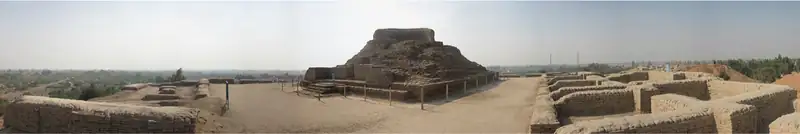
The citadels also included public baths. At Mohenjo-Daro, the tank of the bath was forty feet long and twenty-three feet wide and entered by staircases on either side. A nearby well provided the water. Archaeologists have uncovered a large hall supported by pilasters composed of mud-brick at Mohenjo-Daro, as well as a multistory residence built around an open courtyard. This evidence suggests that ritual specialists, perhaps priests, lived and performed religious functions in the citadels that may have required them to bathe in the large public bath and congregate in the hall. An extensive granary for grain storage was found at Mohenjo-Daro. Farmers from outlying rural areas undoubtedly produced the surplus crops that were stored here to provide sustenance for the elite, religious specialists, and other city residents such as merchants and artisans, just as in Mesopotamia and Egypt.
The lower sections of the Indus valley cities consisted of residential quarters and workshops. At Mohenjo-Daro and Kalibangan, the houses typically consisted of four to six rooms built around a central courtyard and were equipped with wells to provide running water to a bathroom. Larger homes in the cities were multistory with as many as thirty rooms. There is also evidence of devices attached to some of the roofs that pumped wind into homes and other large buildings to cool them.
Link to Learning
Some of the most intriguing evidence at the large Indus valley civilization sites indicates the residents had sophisticated knowledge of water engineering and built citywide drainage systems with covers for servicing. Evidence was found of indoor toilets that connected to this drainage network that ran throughout the city.
The Indus valley cities also included an industrial area where workshops were located. At Harappa, this district included quarters for the laborers who worked there. The ancient city at the site of Lothal near the Indian Ocean included a dockyard and a warehouse for incoming trade goods. The inhabitants of these cities may have included the artisans and merchants who provided goods for the ruling elite. As in ancient Mesopotamia and Egypt, the majority of the population were probably farmers who lived in the outlying rural areas surrounding each city.
Trade, Writing, and Religion¶
Archaeological work has revealed that a considerable amount of trade flowed between Mesopotamia and the Indus valley. Cuneiform tablets from Mesopotamia refer to the Indus valley as Meluhha and document that precious stones such as lapis lazuli and carnelian, as well as marine shells from the Indian Ocean, were imported from there. Merchants traveled by sea across the Indian Ocean and by land over the Iranian plateau (Figure 3.26).
![A map with three sections of land. In the southwest, Egypt and Nubia are labelled with the cities of Memphis and Thebes located on blue waterways. In the northwest, Crete is labelled with the city of Troy labelled to the north and Tyre labelled to the east. In the middle of the map, the Hittite Empire is labelled and highlighted in a green oval. To the southeast, the Mitanni State is highlighted in a rough square of orange. Heading southeast, Assyria is labelled and highlighted in a green oval. The cities of Ninevah and Assur are labelled within. To the south, Babylonia is labelled and highlighted in a purple oval. The cities of Babylon, Susa, and Ur are located within. A label for Sumer is located in the south of this purple area. In the far east of the map, Indus is labelled. A red line with arrows at both ends runs from Babylonia to Indus and back. A purple double arrowed dashed line runs in the water from Indus to the city of Ur and back.](img/osx-worldhist-a03-04-m-mesopot.webp)
The influence of Mesopotamia on the Indus valley culture is evident in the use of seals. The Indus valley seals were inscribed with depictions of human figures and animals such as bulls and goats, likely totems for families or lineages, and brief inscriptions that likely indicate names, titles, or occupations. Merchants marked ownership of goods by making an impression of the seal on the soft clay that covered the mouth of the jar or other vessel that held the objects, or on clay tags attached to sacks of grain (Figure 3.27). A similar practice occurred in contemporary Mesopotamia, where the seal was in the shape of a cylinder that could be rolled to leave an impression. Archaeologists have found seals from the Indus valley in ancient Sumerian cities such as Ur.
![A picture of two square objects is shown on a grayish-blue background. The one on the left is white and smaller, while the one of the right is a bit bigger and a cream color. The images on the square on the right are raised from the back. They show a horse-type creature with ornamental reins around its neck and a long, pointy horn extending out its head. Above the animal are four shapes – a diamond with a v-shape inside, a triangle with lines inside, and a line, while the fourth shape is indistinguishable. Below the head of the animal is a long stick with a square at the top and a half-circle below. Both shapes have lines on them. The square at the left is an impression of the first square, showing everything backward and inside the stone as opposed to sticking out as in the other square.](img/osx-worldhist-a03-04-indusseal2.webp)
The script that appears on many of the seals is unique to the people of the Indus valley civilization, and scholars have yet to decipher it. It seems to consist of phonograms, signs for the sounds of syllables, and there appear to be about four hundred such signs. Many speculate that the language written in this script may be related to the Dravidian languages still spoken across southern India today. It may also be similar to the script invented by the Elamites of southwestern Iran. Unlike the case in Mesopotamia and Egypt, archaeologists have not uncovered clay tablets or papyrus rolls in the Indus valley.
Link to the Past: Deciphering Indus Valley Script
One of the great mysteries surrounding Indus valley script is what exactly it represents. Was it a means of capturing spoken language, or did the marks simply indicate whether taxes had been paid on an item or signify the quality of a particular good (in the same way we use stars to rate products and services online today)?
Rajesh Rao, a professor of computer science at the University of Washington who became fascinated with the Indus valley civilization as a child in India, created a computer program to help him answer this question by measuring conditional entropy in Indus valley writing. Conditional entropy measures the degree of randomness in a sequence. In a system of writing that encodes language, there is a fairly low level of randomness. Letters appear frequently in some combinations and rarely or never in others. For example, in the English language, the letter q is usually followed by the letter u and never by the letter k. At the beginning of a word, the letter h is never followed by a consonant.
Rao tested the conditional entropy of the Indus valley script along with that of several natural languages including English, artificial languages such as those written for computers, and other sequences not related to language such as human DNA sequences. He discovered that the Indus valley script has a degree of randomness similar to that of natural languages, leading him to the conclusion that the symbols do represent a language and are not simply marks of quality or signs that something has been taxed. He also concluded that the rate of conditional entropy in Indus valley writing resembled that of Old Tamil, an earlier form of the Tamil language currently spoken in southern India that belongs to the Dravidian language family. This idea angered many Indians, especially those who speak Hindi, a language derived from Sanskrit that is the first language of many people in northern India. This issue is both historical and modern. If the language of the ancient Indus valley was Dravidian in origin, it calls into question the ancestry of the people who lived there, and given the evolution of the caste system, it raises questions about social identities that have existed for centuries. The issue remains in question, and the controversy about ancestral origins is far more complex than the single issue of language.
- Why do you think the origin of language matters so much to the people of India?
- If Indus valley writing were deciphered, what could historians learn about the culture that we cannot currently know?
- In what other ways could computers help historians learn about the past?
Bronze technology probably also entered the Indus River valley by the third millennium BCE through trade with Mesopotamia. Merchants from the Indus valley may even have exported tin from Afghanistan to Mesopotamia, since this metal was in demand for the manufacture of bronze.
Notwithstanding the many obvious Mesopotamian influences and trading connections, the people of the Indus valley civilization developed their own unique culture. Their distinctive religion may have shaped later cultures in India. For example, clay figurines from the Indus valley that are believed to depict deities are often interpreted as portraying a goddess whose female attributes are similar to those of the Hindu goddess Durga, consort of the god Shiva. Some seals depict a horned three-faced figure surrounded by animals, which closely resembles the Hindu deity Shiva when represented as the Lord of the Animals (Figure 3.28). Archaeologists have also found stones molded into shapes that resemble lingams and yonis, which are representations of male and female sexual organs associated with the worship of Shiva. The people of the Indus valley buried their dead with modest grave goods such as clay pots, which suggests a belief in an afterlife. However, there is no evidence of temples or monumental tombs such as the Egyptian pyramids or the royal tombs of Ur in Mesopotamia.
![Two pictures are shown on a dark black background. (a) The first picture shows a caramel-colored stone carving with a large piece missing from the bottom right. The middle of the stone shows a man facing forward with a rectangular face, large nose, and almond shaped eyes. A face is also shown on either side of his head. He wears a large hat with round horns on both sides. He wears clothing with stripes all over and is sitting on a footed platform. There is a goat-type creature under the platform with two horns. Various animals can be seen around his head (two horned animals on the left, snake and fish type animals above his head and an elephant and tiger type animals on the right). A small carving of a person is seen to the far right. (b) This stone carving is colored off white and shows a person’s head and chest. They have full lips, closed eyes, and a highly etched tall headdress on their head. There is another head on either side of their head that appears similar. Rows of necklaces hang from their neck and there are some carvings seen on the bottom right of their chest. The background shows darker colored stone and black above the head.](img/osx-worldhist-a03-04-shiva.webp)
The artisans of the Indus valley created unique sculptures in clay, stone, and bronze. One of the more spectacular stone works from Mohenjo-Daro depicts a serene bearded man who may be a priest or leader in the community. A tiny bronze figure appears to represent a young woman dancing (Figure 3.29). Her bracelets and necklaces indicate that the people of this culture employed artisans to manufacture such adornment, which may have indicated high social status. Artisans of the Indus valley were also very busy manufacturing pottery and seals. Their artistic designs influenced artisans in neighboring cultures over a wide area, from the upper Ganges River valley in what is today northwestern India to Baluchistan in western Pakistan and southeastern Iran.
![A picture of a black statue of a lady on an off-white platform is seen. Her shadow reflects behind her on a white background. The statue has long hair in a low ponytail with closed eyes and a half-smile on her face. She wears a necklace with three oval objects hanging in front. Her right hand rests on her hip and her left arm hangs down with her fist resting above her bent left knee. Bangles adorn both her arms. Her feet are missing and her right leg is anchored to the platform below while the left leg is resting in the air.](img/osx-worldhist-a03-04-dancestat.webp)
Merchants from the Indus valley were undoubtedly active in exchanging such wares in these regions. In the absence of coinage, they used a common system of stone cubical weights to assess goods in commercial exchanges that required barter. The cities of the Indus valley could have also used these weights to assess taxes in kind that they collected for their granaries.
The Era of Decline¶
Beginning around 1800 BCE, the centuries of trade between the Indus valley and Mesopotamia came to an end. Over the next four centuries, the cities of the Indus River valley were slowly depopulated, and the civilization declined, likely in stages. Why and how this decline occurred remains unknown. One common view is that it was related to regional climate change. Around 2000 BCE, the floodplain of the Indus River shifted dramatically, creating dry river beds where cities had been and water once flowed. Changes in the pattern of seasonal wind and rainfall, known as the monsoon in South Asia, may have caused these environmental effects. Without a secure source of water for drinking and irrigation, the cities would have suffered declines in population. Another theory suggests that centuries of environmental degradation caused by urbanization and large population growth made the land unsuitable to human populations. Still other views point to the possibility of tectonic activity that changed the course of the rivers, or even epidemic disease that decimated the population.
Before these environmental factors began to be considered, the view for many years was that the Indus valley civilization was violently destroyed in a conquest by nomadic Indo-European speakers calling themselves Aryans, a Sanskrit-speaking group of nomadic pastoralists who raised cattle and horses. Some Aryans began migrating from the Eurasian Steppe north of the Black and Caspian Seas around 3500 BCE. Over time, different groups spread into Europe, Anatolia, Iran, and eventually Pakistan and India.
The Aryan invasion theory of decline depends heavily on Indo-European works of religious literature like the Rigveda, produced sometime between 1500 and 1000 BCE in northwestern India. This work includes a great number of hymns, rituals, descriptions of deities, and other largely religious topics geared toward understanding the origin of the universe and the nature of the divine. But in parts it also discusses the arrival of the Aryans and describes them attacking the walled cities and forts of the indigenous population. While some of these descriptions were likely developed centuries after the fall of the Indus valley civilization and may be unrelated to it, some scholars continue to hold that these passages describe the conquest of Mohenjo-Daro. Archaeological evidence attesting to the fact that Mohenjo-Daro was attacked around 1500 BCE and mostly destroyed lends some credibility to these claims.
We may never know what best explains the collapse of the Indus valley civilization. A few or all these causes may have played a role. For example, environmental degradation caused by years of resource exploitation and high population density certainly had an effect. These issues could have been compounded by climate change and disease. And in a weakened state, the people of the region would have been far more vulnerable to attack by raiding groups like the Aryans.
However it happened, by around 1500 BCE, the social and political systems had broken down, and the sophisticated culture of the Indus valley civilization had collapsed. The architectural styles that characterized the cities at their height were abandoned, as was the writing system, the sophisticated metalworking, and other artisanal crafts. The Indus valley civilization had come to an end.
Chapter Review¶
Key Terms¶
- Bronze Age
- the period from 3500 to 1110 BCE when bronze, an alloy of copper and tin, was the preferred material for manufacturing tools and weapons
- city-state
- an independent political entity consisting of a city and surrounding territory that it controls
- Code of Hammurabi
- a list of judicial decisions that the Babylonian king Hammurabi had inscribed on stone pillars throughout his kingdom
- culture
- all the ways in which members of a human society interact with one another and with their environment and pass these ways from generation to generation
- cuneiform
- a phonetic writing system based on the sounds of words and invented by the Sumerians in about 3000 BCE
- Harappan
- a term describing the ancient Indus valley civilization, named for one of its largest cities and the first to be discovered by archaeologists
- hieratic
- a simplified form of hieroglyphics employed by Egyptian scribes for recording everyday documents such as receipts and contracts
- hieroglyphics
- a complex writing system developed around 3000 BCE in which written symbols represented both sounds and ideas
- lugal
- the Sumerians’ term for their ruler
- monsoon
- the seasonal pattern of wind and rainfall across South Asia
- nomarchs
- regional governors in ancient Egypt
- papyrus
- a type of paper Egyptians made from a common reed plant growing along the Nile
- pastoralists
- nomadic people who rely on herds of domesticated animals for subsistence
- pharaoh
- the title of the Egyptian ruler, translated as “big house”
- polytheists
- people who worship multiple gods, usually associated with different aspects of the natural world
- social stratification
- the hierarchical order of society in which people sharing the same level of wealth and status make up a distinct class or strata
- specialization
- a societal characteristic in which people perform specific tasks, such as farming (farmer) or producing tools and clothing (artisan), that contribute to the well-being of the community
- ziggurat
- an immense stepped tower with a flat top built of mud-brick that served as a temple in Sumerian cities
Summary¶
3.1 Early Civilizations¶
For tens of thousands of years, humans lived largely as mobile, subsistence hunter-gatherers. But with the innovation of agricultural production in a few areas around the world, some groups began to settle, and a new agricultural and sedentary lifestyle gave rise to early civilizations characterized by urban settings, the specialization of labor, and increasing social stratification. The earliest examples appeared in Neolithic settlements like Jericho, Çatalhöyük, Mehrgarh, and others in China, Mesoamerica, and the Andean region of South America.
3.2 Ancient Mesopotamia¶
The city of Uruk in the land of Sumer was one of the first true cities in world history. Advances in technology such as the invention of bronze-making techniques, a writing system called cuneiform, and a sophisticated religion with a pantheon of deities spread and facilitated the development of a complex Mesopotamian culture and the rise of other city-states there. The Sumerian city-states under the rule of their lugals or kings commonly waged war against one another and against a stream of foreign invaders.
The period of independent city-states came to an end with the rise of the world’s first empire, the Akkadian Empire of Sargon of Akkad. While it lasted only about a century and a half, this empire inaugurated a new era in the region, which later saw the emergence of other powerful realms. These included the Third Dynasty of Ur and the famous Babylonian Empire of Hammurabi, who created an influential law code. These later empires preserved many elements of the earlier Sumerian civilization, including cuneiform and works of literature like the Epic of Gilgamesh.
3.3 Ancient Egypt¶
Ancient Egypt arose as an early civilization along the Nile River valley in the fourth millennium BCE. A polytheistic society with a great assortment of deities and its own writing system, Egypt was united under the pharaohs for much of its ancient history. Its people held that order, truth, and justice (Ma’at) ruled the day and ordered the universe.
The Old Kingdom was the era of pyramid building. The Middle Kingdom was a time of renewed strength and territorial expansion. “Intermediate” periods of weakened centralized control followed and preceded these kingdoms. The First Intermediate Period was a time when regional governors gained power at the expense of the pharaohs. During the Second Intermediate Period, traditional Egyptian nobles lost control of the Nile delta to the Hyksos people and control of far upper Egypt to the kingdom of Kush. These areas were later reconquered with the inauguration of the New Kingdom.
3.4 The Indus Valley Civilization¶
The Indus valley culture emerged as an early civilization in the early third millennium BCE. It drew inspiration from contacts with Mesopotamia, but its people also developed large well-planned cities such as Harappa and Mohenjo-Daro that were quite different from contemporary cities in ancient Sumer. Since the written script of the Indus peoples remains undeciphered, historians can only speculate about how these great cities arose and why they fell in the early second millennium, perhaps as a result of trade disruptions, changes in the course of rivers, the arrival of Indo-European–speaking nomads, climate change, environmental degradation, disease, or some combination of these factors.
Review Questions¶
3.1 Early Civilizations¶
1.
2.
3.
3.2 Ancient Mesopotamia¶
4.
5.
6.
7.
8.
3.3 Ancient Egypt¶
9.
10.
11.
12.
13.
3.4 The Indus Valley Civilization¶
14.
15.
16.
17.
Check Your Understanding Questions¶
3.1 Early Civilizations¶
18.
19.
3.2 Ancient Mesopotamia¶
20.
21.
22.
3.3 Ancient Egypt¶
23.
24.
25.
3.4 The Indus Valley Civilization¶
26.
27.
28.
Application and Reflection Questions¶
3.1 Early Civilizations¶
29.
30.
3.2 Ancient Mesopotamia¶
31.
32.
33.
3.3 Ancient Egypt¶
34.
35.
3.4 The Indus Valley Civilization¶
36.
37.
38.
Adapted from World History, Volume 1, to 1500 by OpenStax, licensed under CC BY 4.0. Access the original for free at openstax.org. Changes: converted to the web reading format of The Open Book Project.